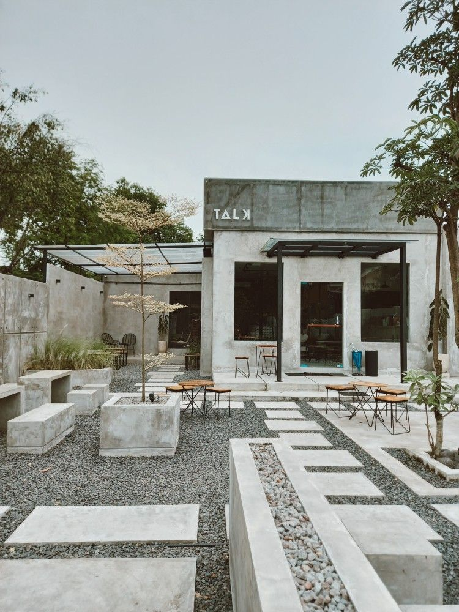

Career Goals:
My long-term goal is to open a cafe that brings together my love for art, cooking, and reading.
I envision the cafe as a warm, inviting space where guests can not only enjoy delicious food and coffee
but also experience a unique atmosphere filled with my personal art collection. Additionally, I want to create a cozy
reading area within the cafe, offering visitors a quiet space to enjoy their favorite books, sip coffee, and relax.
This cafe would be a true reflection of my passions, combining art, culinary tradition, and the love of reading
into one enriching experience. I also don’t want to put the café surrounding the busy city because I think it might
give noise pollution to my customers. I really hope that one day I will be able to achieve this.
| Design Ideas |
Design 1
The first café design in the image features a vibrant and eclectic design, creating a colorful and artistic atmosphere. The interior is filled with bright, mismatched furniture, including chairs
and tables in various colors and patterns, adding a playful and energetic vibe. The walls are adorned with a mix of artwork and murals, contributing to the bohemian feel of the space.
Plants are scattered throughout the space, bringing in touches of greenery and giving the café a relaxed, natural feel. This café seems to be a perfect spot for those who enjoy a creative, artistic,
and laid-back setting, with an emphasis on individuality and expression. The overall design encourages a welcoming and informal vibe, making it a great place to socialize, relax, or enjoy a casual meal. |
Design 2

This second café design has a minimalist, industrial design with a focus on raw materials like concrete and metal. The exterior features simple, clean lines with exposed
concrete walls, giving the café a modern, understated look. The outdoor seating area includes concrete benches and tables, blending into the natural surroundings while
maintaining a sleek, contemporary aesthetic. The café itself has large, floor-to-ceiling windows, allowing natural light to flood the interior and offering views of the
outdoor space. The use of metal-framed windows and doors complements the industrial style, while the simple furniture, such as small, light wooden tables and metal-framed chairs,
keeps the design consistent. This café has a minimalist, modern atmosphere with an emphasis on open space, clean lines, and natural elements, making it a calming and inviting
environment for those who enjoy a minimalist and modern aesthetic. |
Design 3
This third café design exudes a warm, cozy, and intellectual ambiance, resembling a well-curated library. The space features exposed brick walls, which add a rustic and industrial charm.
The shelves are filled with books, creating a welcoming environment for book lovers, and blending the concepts of a café and a reading nook. The wooden shelves, tables, and chairs,
along with the soft, earth-toned leather seating, contribute to the warm, natural aesthetic. The café tables are simple but elegant, made of light wood, complementing the overall cozy vibe.
This café is an ideal spot for anyone looking for a quiet place to read, work, or enjoy a cup of coffee in a serene setting. |
Design 4
This fourth café design has a unique and artistic design, drawing heavy inspiration from the work of famous artist Vincent van Gogh.
The walls are adorned with framed reproductions of his iconic paintings, including "Starry Night," "Sunflowers," and portraits.
The ceiling adds an extra layer of creativity with colorful umbrellas suspended upside-down, some of which have van Gogh's artwork printed on them.
The furniture consists of wooden tables and chairs, which give a warm, rustic feel, blending well with the vibrant artwork and the greenery-like
backdrop on the walls. This café seems to offer a cozy, artistic ambiance, making it an inviting space for art lovers to relax and enjoy their time.
|
BACK TO THE TOP
FOOTER
E-mail: aleeyasarah4@gmail.com
Instagram:sarahrahman.
Phone: +6011-2105 6259
|
|